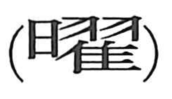

曜

Kun: | On: yo
to shine ・ sparkle ・ luminary ・ weekday
Explanation
曜 combines 日, the sun, with 翟 as its sound element. It means the sun’s light shining brightly. The related 燿 and 耀 belong to the same group of words for radiance and glittering brilliance.
From sunlight, 曜 extends to the shining bodies in the sky. This celestial use survives in 曜日, the days of the week named after the sun, moon, and planets. Its centre remains the visible brilliance by which a heavenly body shines.